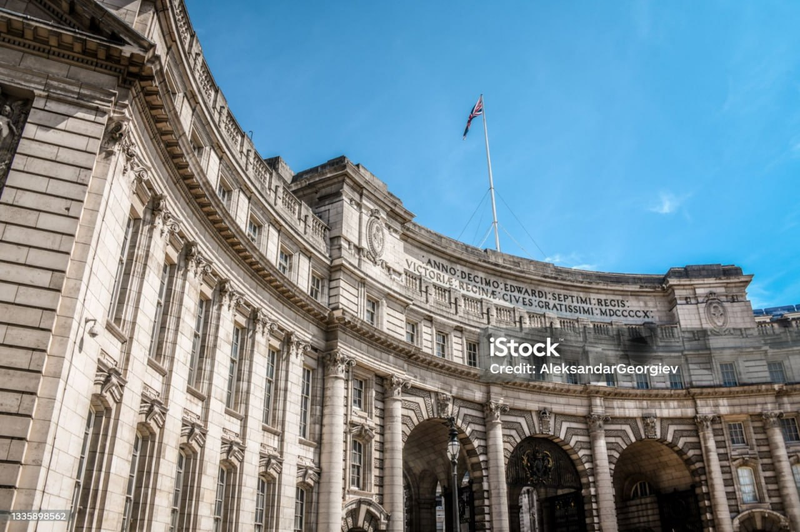

1.Buckingham Palace
The official residence of the monarch in London. You can watch the iconic Changing of the Guard ceremony.
London, the capital of England and the United Kingdom, is a vibrant and historic city known for its iconic landmarks such as the Tower of London, Big Ben, Buckingham Palace, and the London Eye. A global hub for culture, art, finance, and education, London blends a rich history with modern innovation. It is famous for its diverse neighborhoods, world-class museums, theaters, and lively markets, making it one of the most visited cities in the world.
The official residence of the monarch in London. You can watch the iconic Changing of the Guard ceremony.

A historic castle dating back to the medieval period. Home to the Crown Jewels of the United Kingdom

One of London’s most iconic landmarks. Located next to the Houses of Parliament.

A giant observation wheel providing panoramic views of the city.
One of the most popular tourist attractions.

Houses thousands of artifacts from around the world.
Entry is free of charge.

One of the largest and most famous Royal Parks in London.
Perfect for walks, boating on the lake, or relaxing.